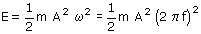
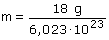
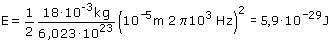

Ecuaciones del movimiento armónico:
En general una molécula oscilando tendrá energía cinética y energía potencial elástica. La energía de oscilación (Suma de las energías cinética y elástica) es constante e igual al valor máximo de la energía cinética o de la elástica:  El problema del problema es saber la masa de una molécula de agua. Fácil: un mol de agua son 18 g y un mol también son 6.023·1023 moléculas, por tanto:  Una vez resuelto el problema químico volvamos a la Física:  |